This screen is used in general to insert/export/edit Datasets. In the top left side of this screen there are two options for importing datasets from a file and exporting datasets to a file (there is also a future plan to export a dataset to another database). Furthermore, a drop down menu specifies the database that will be used in order to save or to edit an existing dataset called "DDB Connection". In the following example, we use "Demography" database.
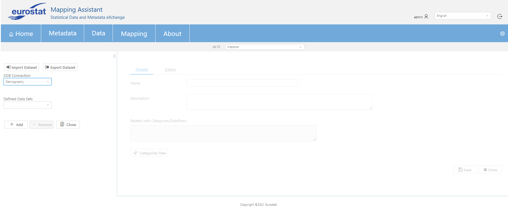
The user can add a new dataset in a database by clicking the button + Add. Afterwards, a new menu gives the option to add a new dataset via SQL query or using Visual Editor. In case SQL query is chosen, the user should define in "Details" tab the name and the description of the dataset. In the "Editor" tab the user can add in query section the query that created the new dataset. The button Preview Data can be used in order to review the query and the button Update in DB updates the table at the bottom of the screen. Finally, when the user has inserted all the needed information a single hit in Save button is needed.
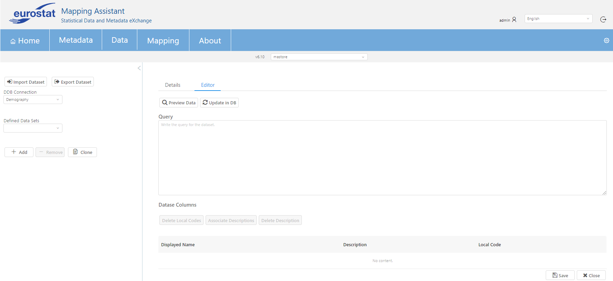
Moreover, if the user wants to add a new dataset via visual editor the first step is to define the name and description of the dataset (like the example with SQL query import in the above example). Then, the user needs to select the tables which will be used in order to choose the columns that he wants to be included in the new dataset. In the below example table "TYPE_B_DEMOGRAPHY" is used and from this table all columns or some of them can be selected (via button Select/Unselect all or by clicking the check box of every column) in green table section at the bottom of the screen.
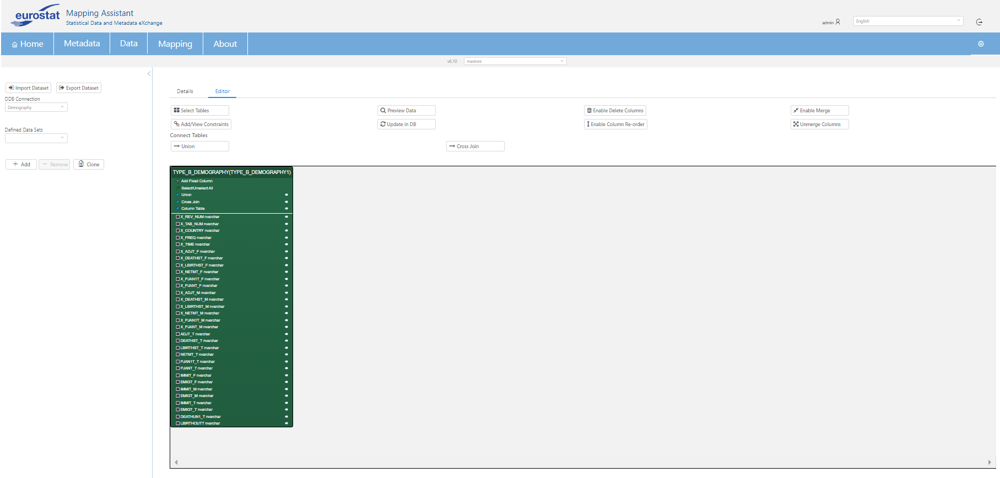
The button Preview Data can be used in order to check the query of the corresponding table. In addition, button Enable Delete Columns authorizes user to delete any fixed columns and then with a second click on the same button the deletion action is finalized. The user can also merge any column by pressing the button Merge Columns in order to enable the action and then with another click to finish this action. The merging action can be reverted by clicking the button Unmerge Columns.
The merge/unmerge functionality is available only for datasets that contain a single table.
Also, user can reorder the columns by clicking the button Enable Column Re-order and then use arrows near every column in the green section at the bottom of this screen.
Moreover, new constraints can be added in every dataset like the below example. As it can be seen in the below image specific table, column, operator and value are set and added.
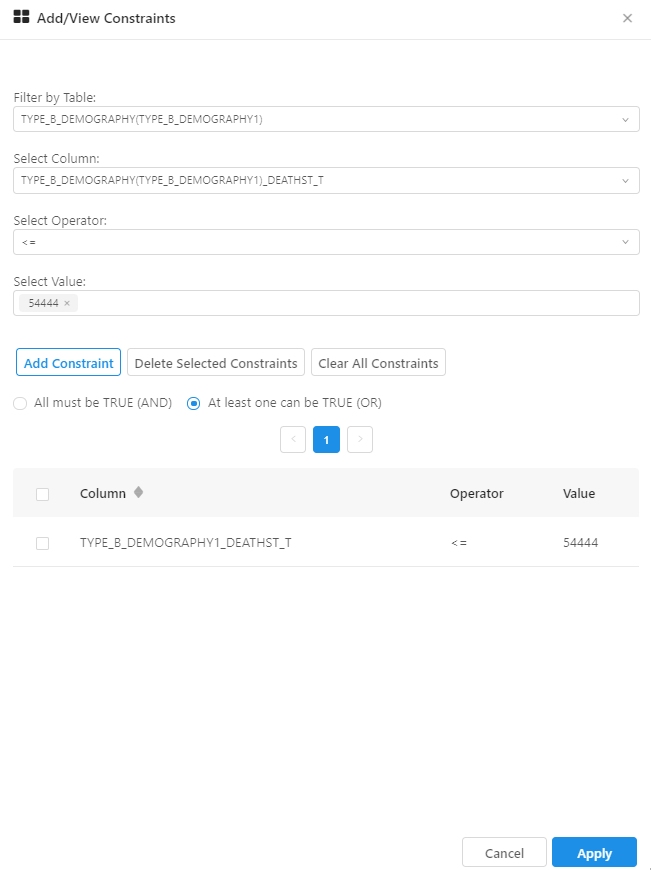
For a dataset that includes more than one table the user can select exactly two and then combine them by clicking Union button. In order for this action to be successful the user should first choose the titles of every table in the green section (headline of every table should then become blue) and then click the described button as it can be seen below. It is a table-to-table connection. The two selected tables need to have the same amount of columns.
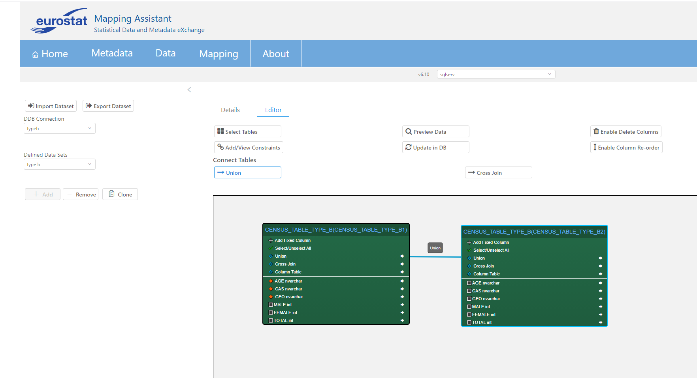
Cross Join functionality can be used to generate a paired combination of each row of the first table with each row of the second table (cartesian product) with the same way that described in the above paragraph and using the button Cross Join. It is a table-to-table connection.
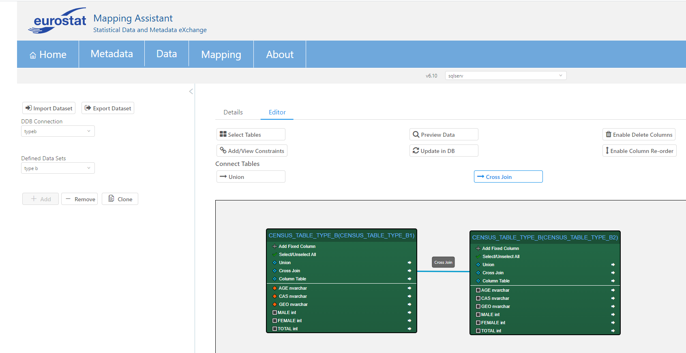
Inner Join can also be used between columns of two different tables. There is no button to do that and the user does not need to select any tables, but the user can directly place the mouse cursor on the right side of a column arrow (🡆), hold & drag the left mouse button to produce a line, and place the line on the left side of the other table's column.
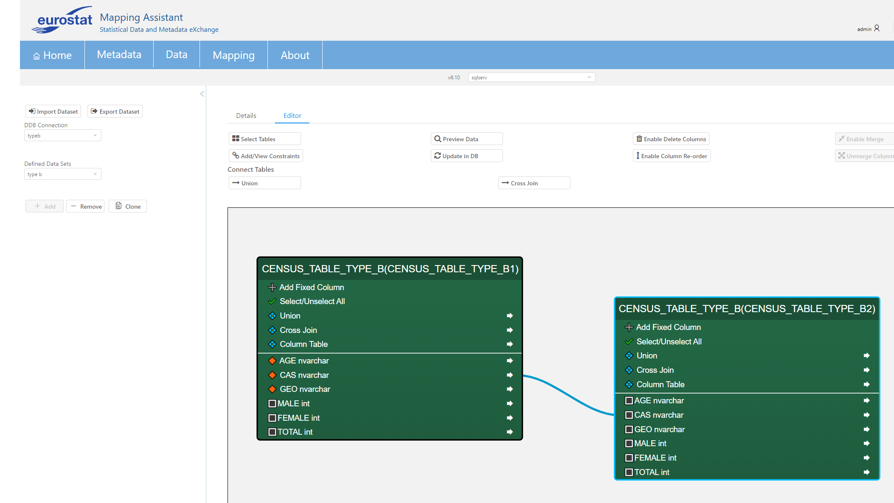
Existing datasets can be modified if the relevant dataset is selected in drop down menu Defined Data Sets . In this case the user can use every functionality described in previous chapter. Furthermore, the user can delete or clone a dataset using buttons in the left sidebar.
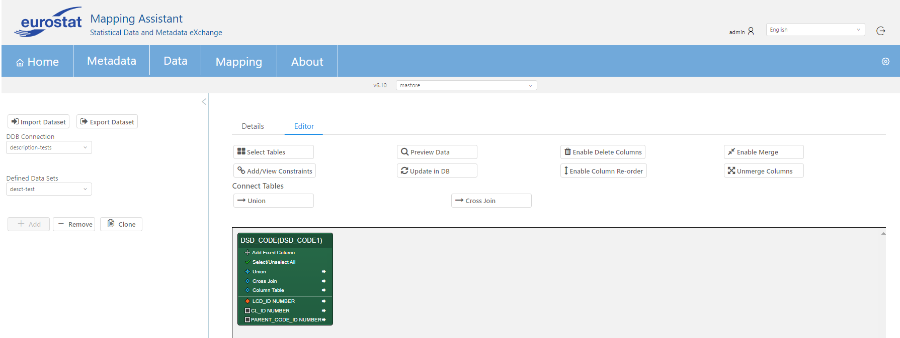
In the bottom side of this screen, all dataset columns of every dataset are displayed.
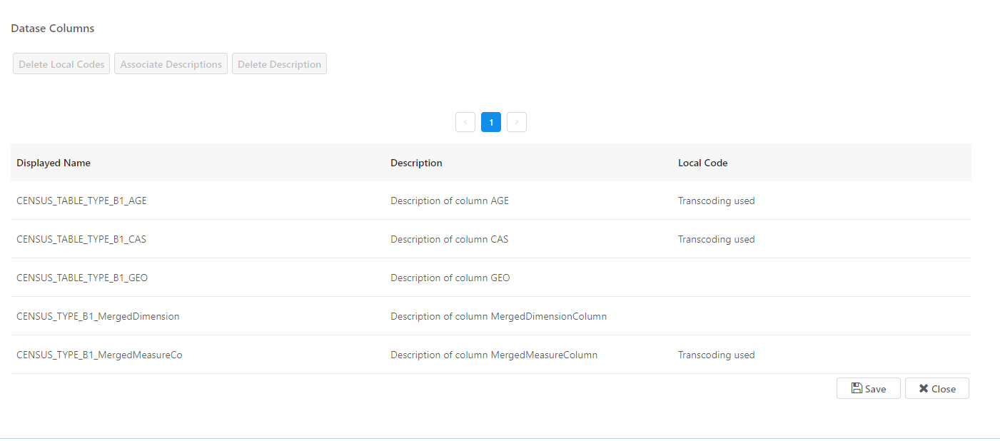
This functionality is used to associate a description with a local code. First of all, the dataset we use this on should have at least 2 tables in the corresponding Dissemination Database. One of the tables contains the local codes, and another table which contains the local code descriptions. If a suitable dataset is found, the next step is to select this dataset and go to the editor. There, under "Dataset Columns", the user needs to click on the dataset column row they wish to apply the descriptions on, inside the table (selection is indicated by blue) like so:
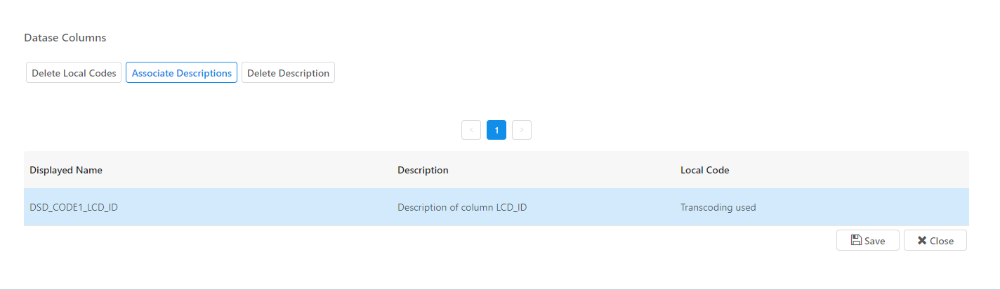
Then, click on "Associate Description" button. The following window should appear:
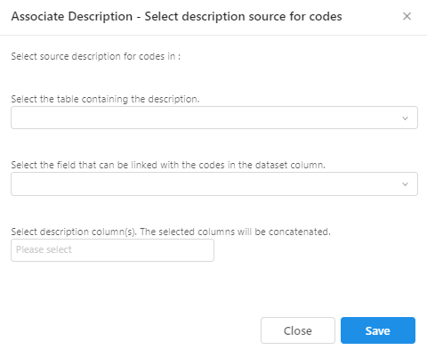
First, the user should select the table which contains the descriptions. The next options change according to the table selected. Then, the second step is to select the field to be linked with the dataset column codes. Lastly, the user needs to select the description columns. Multiple values can be selected here, and the end result will be the concatenation of them. An example configuration is shown below:
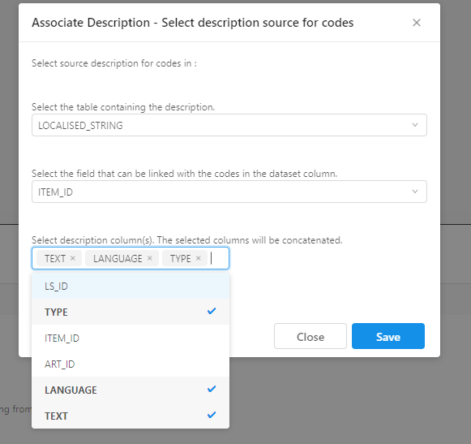
The user should press "Save" to finalize the options.
Finally, selecting a dataset column row in the table and pressing "Delete Description" will delete any previously saved description options regarding this dataset column.
The local codes belonging to a dataset column can be deleted by selecting the dataset column in the table and pressing "Delete Local Codes".
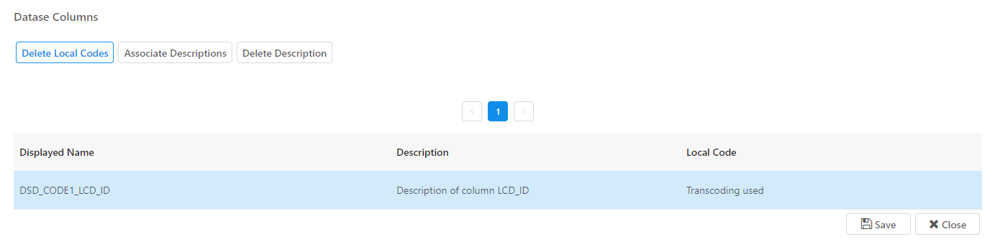